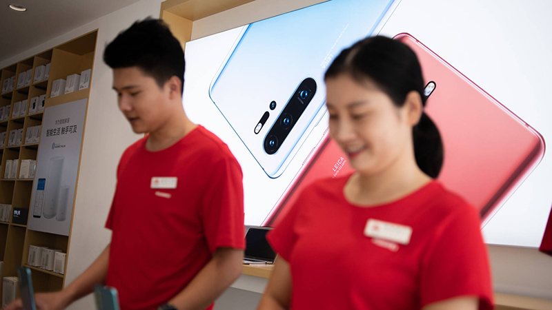
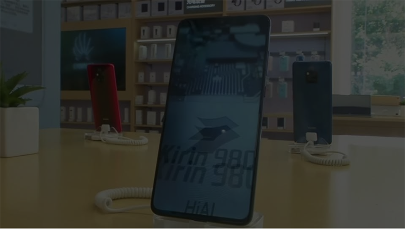

Kenneth Li, Douglas Busvine
NEW YORK/FRANKFURT (Reuters)
Huawei Technologies plans to forge ahead with the launch of new high-end smartphones in Europe even though
it may not be able to offer Google’s official Android operating system and widely used apps such as Google
Maps, company executives told Reuters.
The world’s No. 2 smartphone maker is set to unveil its new Mate 30 line of phones on Sept. 18 in Munich.The
Mate 30, made to work on new 5G mobile networks, is Huawei’s first major flagship smartphone launch since
U.S. President Donald Trump’s administration effectively blacklisted the company in mid-May, alleging it is
involved in activities that compromise U.S. national security, a charge the company denies.
A Google spokesman told Reuters the Mate 30 cannot be sold with licensed Google apps and services due to the
U.S. ban on sales to Huawei. A temporary reprieve that the U.S. government announced last week does not
apply to new products such as the Mate 30, the spokesman said.
Huawei spokesman Joe Kelly:
“Huawei will continue to use the Android OS and ecosystem if the U.S. government allows us to do so. Otherwise, we will continue to develop our own operating system and ecosystem.”The Commerce Department declined to comment. 
Huawei can likely use an open-source version of Android without falling foul of the U.S. ban on sales to them.
But Google’s apps can only be used in Europe under a paid license from the search giant. There is no fee for the
license outside of Europe.
Independent analyst Richard Windsor:
“Without Google Services, no one will buy the device.”Huawei earlier this month announced its own mobile operating system, dubbed Harmony. But analysts and Huawei
“Our new phones will still be based on Android. Reporting by:
We want to maintain one standard, one ecosystem, one technology.”